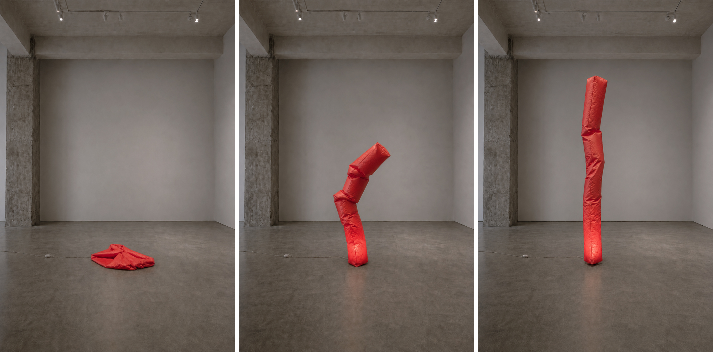
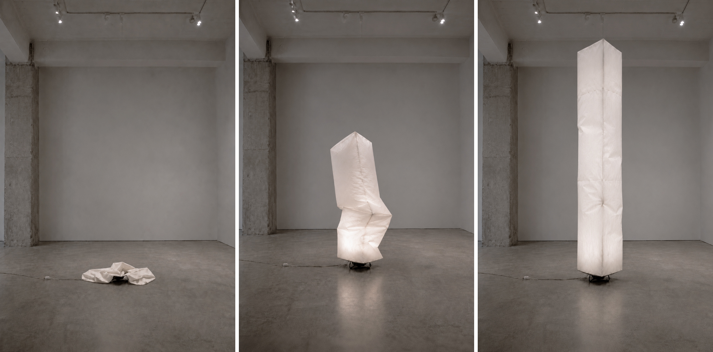

A Question of Posture
Inflatable sculptures.
A Question of Posture consists of a group of inflatable sculptures arranged as a temporary gallery installation. The forms borrow from the simple geometric language of Minimalist sculpture but replace stillness and authority with a repetitive and somewhat comical choreography of shifting pressure, subtle movement, and occasional collapse. Fans, cords, fabric, seams, and basic support systems remain visible, allowing the works to read both as abstract sculpture and as provisional devices doing what they can to maintain themselves. Over time, the columns subtly sway, bend, deflate, and recover, while the cubes rotate slowly or shift out of sync with one another. Their behavior is restrained rather than spectacular: a posture held briefly, lost, corrected, and lost again. What first appears composed and architectural begins to feel unstable, comic, and faintly theatrical, as if the objects have been assigned a role they can only partially perform. The installation moves between geometry and character, monument and prop, sculpture and slow physical gag, without settling fully into any one of them.



Inflatable columns shown in three states: collapsed, partially recovering, and upright.
The cubes move by means of a concealed CNC mechanism: two motors control their position on the floor, while a third slowly rotates each volume around its vertical axis. Their movement is deliberate but slightly unconvincing, as if two oversized tumbleweeds were quietly negotiating where, and how, to stand.
Shown here as a separate work, a multicolored nylon column rises, slumps, and recovers in repeated attempts to hold itself upright. Part sentinel, part inflatable sign, it occupies a threshold condition: standing off to the side, near an entrance, or just outside the main group, as if waiting for its posture to become convincing.